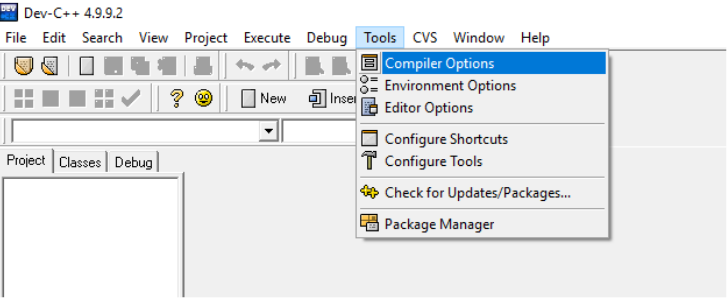
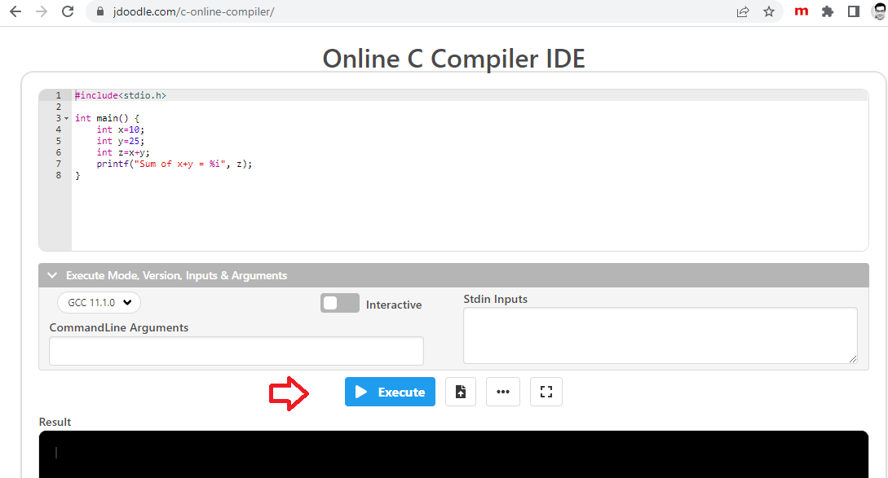

Bài mở đầu: Giới thiệu về ngôn ngữ C
Nội dung bài học
I. Tổng quan về ngôn ngữ lập trình C
Tiền thân của ngôn ngữ lập trình C là ngôn ngữ BCPL ( Basic Conbined Programming Language) do Martin Richards nghiên cứu. Ảnh hưởng của ngôn ngữ BCPL lên ngôn ngữ lập trình C gián tiếp thông qua ngôn ngữ B, do Ken Thompson viết năm 1970 cho hệ điều hành UNIX chạy trên họ máy tính PDP - 7.
Nhu cầu cải tiến và phát triển cho UNIX đã thúc đẩy Dennis Ritchie và Brian Kernighan sáng tạo ra ngôn ngữ lập trình C ngay tại phòng thí nghiệm BELL ( Hoa Kỳ) vào đầu những năm 70 nhằm mục đích ban đầu là phát triển một ngôn ngữ hệ thống mềm dẻo thay thế cho ngôn ngữ Assembly vốn nặng nề và “cứng nhắc” với các thiết bị phần cứng.
Ngôn ngữ lập trình C đặc biệt khác với ngôn ngữ BCPL và ngôn ngữ B ở chỗ : ngôn ngữ BCPL và ngôn ngữ B chỉ có duy nhất một kiểu dữ liệu là từ máy, trong khi đó ngôn ngữ lập trình C đã có các đối tượng dữ liệu cơ bản như kí tự, các kiểu số nguyên và các kiểu số thực. Đặc biệt con trỏ trong ngôn ngữ lập trình C tạo ra thêm được rất nhiều tính ưu việt.
Sau khi ra đời, đặc biệt thành công với hệ điều hành UNIX, ngôn ngữ lập trình C bắt đầu được phổ biến rộng rãi và người ta đã nhận thấy sức mạnh của nó. C là ngôn ngữ lập trình tương đối vạn năng, có mức độ thích nghi cao, mềm dẻo. Khác với ngôn ngữ Pascal, là ngôn ngữ lập trình có cấu trúc rất chặt chẽ và thường được dùng để giảng dạy về lập trình đặc biệt trong các trường đại học, thì ngôn ngữ lập trình C lại được sử dụng rộng rãi trong các lĩnh vực chuyên nghiệp vì tính hiệu quả và mềm dẻo của nó.
II. Khởi động và thoát khỏi C
II.1. Trên máy PC
Phần mềm soạn thảo và biên dịch
Trên PC chúng ta có thể sử dụng rất nhiều phần mềm hỗ trợ soạn thảo, biên dịch các chương trình ngôn ngữ C như Turbo C, Dev-C++, hay Visual Studio Code.
Phụ thuộc vào phần mềm đang sử dụng, chúng ta sẽ có giao diện khởi động, soạn thảo, trợ giúp khác nhau. Trong giáo trình này chúng ta sử dụng Dev C++ vì tính tiện lợi và phổ dụng của nó.
Cài đặt và sử dụng môi trường Dev C++
Tải Dev-C++ tại đây và cài đặt. Sau khi cài đặt thành công, chúng ta tiến hành các bước sau để sử dụng môi trường Dev-C++
Cấu hình Dev-C++ bằng cách vào Tools chọn Compiler Options
Tại mục Settings chọn Linker từ của sổ bên trái và thay đổi Generate debugging information đến Yes
Tạo dự án mới bằng cách vào File chọn New chọn Project
Tạo dự án mới bằng cách vào File chọn New chọn Project
Một số tính năng cơ bản khi chọn New:
- Source File: Tập tin mã nguồn ngôn ngữ C có phần mở rộng .c
- Project: Tương đương một thư mục gốc chứa nhiều tập tin mã nguồn (*.c) và các tập tin tài nguyên khác. Các tập tin trong cùng một Project phải có liên hệ nhau.
- Resource File: Các tập tin tài nguyên cho một dự án như tập tin ảnh (.bmp, .png,…), video (.mp4),...
Trong hộp thoại New Project, chọn Empty Project, chọn C Project và nhập tên dự án vào ô Name và nhấn OK
Trong hộp thoại Create new project, chọn vị trí lưu dự án trong mục Save in, thay đổi tên (hay để mặc định) tập tin trong mục File name và nhấn Save:
Trong hộp thoại Create new project, chọn vị trí lưu dự án trong mục Save in, thay đổi tên (hay để mặc định) tập tin trong mục File name và nhấn Save:

Bây giờ chúng ta có thể soạn thảo chương trình C đầu tiên trong Dev-C++. Phần này sẽ đề cập trong bài tiếp theo.
Thoát khỏi môi trường Dev-C++
Để thoát khỏi môi trường Dev-C++, chúng ta vào File chọn Exit
II.2. Trình soạn thảo, biên dịch trực tuyến
Trong thời đại điện toán đám mây, bên cạnh việc cài đặt và sử dụng trực tiếp các phần mềm trên PC, chúng ta có thể sử dụng các trình soạn thảo, biên dịch trực tuyến như Visual Studio Code, Replit hay JDoodle.
Ưu điểm của việc sử dụng các trình trực tuyến:
- Không cần tải và cài đặt.
- Thuận lợi cho việc học, ôn tập và thực hành trên các thiết bị khác nhau như máy tính bảng, điện thoại thông minh.
- Dễ dàng cộng tác, chia sẻ.
- Bảo mật cao và theo nhu cầu người dùng.
Giáo trình này sử dụng JDoodle để soạn thảo và biên dịch các ví dụ giúp người học thuận lợi hơn trong quá trình học, ôn tập kiến thức và kĩ năng thực hành. JDoole có thể được truy cập qua website https://www.jdoodle.com/ từ trình duyệt hay có thể tải và cài đặt ứng dụng trên các thiết bị di động.
Sử dụng JDoodle
Truy cập website https://www.jdoodle.com/ và chọn Sign In để đăng nhập:
Chọn tài khoản Gmail có sẵn hay tạo tài khoản mới (chọn Register):
Sau khi đăng nhập thành công, chọn ngôn ngữ C trong rất nhiều ngôn ngữ lập trình JDoodle hỗ trợ:
Sẽ có chương trình mẫu đầu tiên và bạn có thể viết lại chương trình nếu muốn. Để thực thi chương trình C, nhấn nút Execute màu xanh:
Để lưu chương trình đến tài khoản cá nhân, nhấn nút ... bên phải nút Execute
Chọn Save (nếu là chương trình đầu tiên) hay Save As, gõ tên chương trình cần lưu trong mục Project Name và nhấn nút Save As (màu xanh):
Sau khi lưu, để xem lại chương trình, bạn có thể chọn mục My Projects:

Trong cửa sổ My Projects bạn có thể nhấn nút Open để mở lại chương trình và chỉnh sửa (sau đó nhấn Save), có thể xóa chương trình khỏi tài khoản cá nhân bằng cách nhấn nút Remove, chia sẻ chương trình đến người khác với liên kết tại mục Share URL hay nhúng vào một website khác dùng liên kết tại Embed URL hay nhấn Close để đóng cửa sổ:
Thoát khỏi JDoodle
Sau khi lưu chương trình C đến tài khoản cá nhân, trước khi đóng trình duyệt (hay ứng dụng), chúng ta cần thoát khỏi tài khoản cá nhân bằng cách nhấn chuột vào biểu tượng tài khoản và chọn Logout:
Như vậy, qua bài mở đầu này, chúng ta đã tìm hiểu qua ngôn ngữ C và các môi trường cho phép soạn thảo và biên dịch một chương trình C. Trong bài tiếp theo chúng ta sẽ cùng tìm hiểu về các thành phần cơ bản của một chương trình C và viết chương trình đầu tiên.